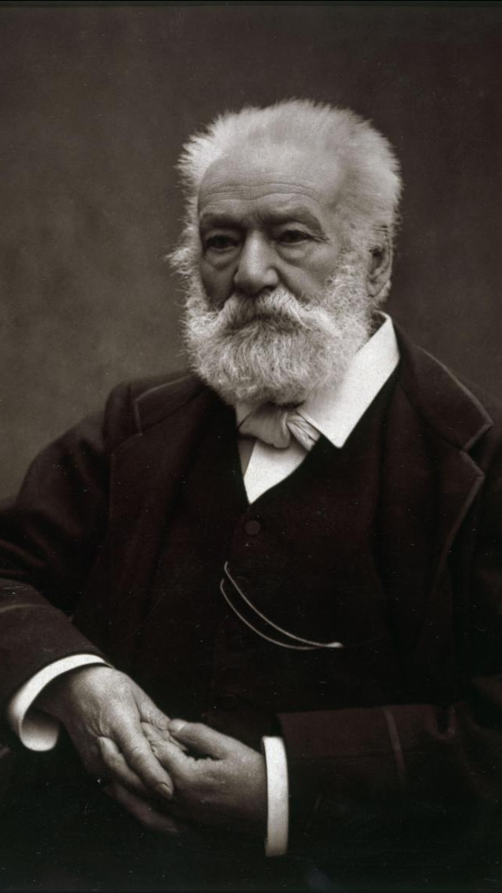

Les contemplations
-Victor Hugo-

1856
Mémoire d'une âme

Auteur
Victor Hugo
Victor Hugo, chef de file du mouvement romantique français, laisse une œuvre abondante qui englobe tous les genres et registres. Il abandonne très tôt ses études pour écrire et revendique la liberté des thèmes et des formes littéraires. Il théorise ainsi le drame romantique, nouveau genre théâtral qui rompt avec les règles du théâtre classique. Sa poésie est lyrique mais touche à tous les sujets : l’amour, la nature, la liberté, la société, la politique. La mort par noyade de sa fille Léopoldine en 1843 est une épreuve dont Victor Hugo ne se remettra jamais complètement. Après la révolution de 1848, Victor Hugo devient député de Paris et s’engage contre la peine de mort et les injustices sociales. Après le coup d’Etat de Napoléon III en 1851, il s’exile à Jersey et devient, avec son recueil Les Châtiments, le chef de file de l’opposition à Napoléon III. C’est durant son exil à Jersey qu’il publie les Contemplations. Victor Hugo rentre en France en 1870 et meurt en 1885. Une foule immense accompagne les funérailles nationales organisées en son honneur. Tu peux lire ici une fiche auteur détaillée sur Victor Hugo (sa vie, son œuvre, ses idées littéraires…)
Resume
Le recueil est organisé en deux parties, « Autrefois » et « Aujourd’hui ». « Autrefois » (1830-1843) Livre I – « Aurore » Ce livre se concentre sur la jeunesse de Victor Hugo, son goût précoce pour l’écriture (« Le poète s’en va dans les champs »), la libération du langage par l’écriture poétique, (« Réponse à un acte d’accusation »). 3/7 Les premiers émois amoureux sont évoqués (« Lise », « Vere novo », « Vieille chanson du jeune temps », « Elle était déchaussée… », « La coccinelle » ), ainsi que le bonheur de contempler la nature (« Le firmament est plein de la vaste clarté », « La vie aux champs »,« Unité »). Livre II – « L’ me en fleur » L’amour est le thème principal de ce deuxième livre : « Tout conjugue le verbe aimer » dit le premier vers du poème « Premier mai ». Victor Hugo évoque les amours de jeunesse (« Hier au soir », « Nous allions au verger », « Mon bras pressait ta taille frêle »), le tourment amoureux (« Tu peux comme il te plaît me faire jeune ou vieux »), la jalousie (« Paroles dans l’ombre »), la puissance mystique de l’amour (« Il fait froid », « Aimons toujours, aimons encore », « Après l’hiver », « Je respire où tu palpites » ). Quelques poèmes sur la fragilité de la vie et de l’amour apportent une touche plus sombre à cet ensemble (« Crépuscule », « Saturne », « Un soir que je regardais le ciel »). Livre III – Les luttes et les rêves C’est dans ce livre que Victor Hugo évoque son combat contre la misère sociale, la guerre, la tyrannie, fléaux engendrés par une société humaine injuste et égoïste. Ce livre préfigure le roman Les Misérables car on y trouve déjà le portrait des miséreux – femmes enfants, ouvriers, prostituées – plongés dans une précarité révoltante. Aujourd’hui (1843-1855) Livre IV – Pauca meae Ce livre est consacré au deuil de Léopoldine, décédée en 1843. Victor explore la douleur et les étapes du deuil, de l’abattement à la révolte, puis à l’acceptation (comme dans « Demain dès l’aube » ) L’évocation de souvenirs de la jeune Léopoldine adoucissent parfois la peine (comme dans « Elle avait pris ce pli…», « Quand nous habitions tous ensemble », « Elle était pâle et pourtant rose », « Ô souvenirs… »).
Personnages
- Victor Hugo : Victor Hugo est l'auteur des "Contemplations" et le protagoniste principal de l'œuvre. Il est un écrivain et poète français du XIXe siècle, célèbre pour ses contributions à la littérature romantique. Les "Contemplations" sont considérées comme l'une de ses œuvres majeures, où il explore des thèmes tels que l'amour, la mort, la nature et la condition humaine.
- Léopoldine Hugo :Léopoldine Hugo est la fille de Victor Hugo et un personnage clé des "Contemplations". Elle est souvent évoquée dans les poèmes de l'œuvre, notamment dans la section intitulée "A Villequier", où Hugo exprime sa douleur après la tragique disparition de sa fille dans un accident de bateau. Léopoldine représente la figure de l'amour filial et la perte dévastatrice.
- Adéle Hugo :Adèle Hugo est la deuxième fille de Victor Hugo et apparaît également dans les "Contemplations". Elle est souvent mentionnée dans les poèmes qui parlent de la vie familiale de Victor Hugo et de son implication politique. Adèle représente le lien familial et l'engagement dans la lutte pour la justice.
- Juliet Drouet :Juliette Drouet est la muse et l'amante de Victor Hugo. Leur relation est profondément liée aux "Contemplations", et de nombreux poèmes de l'œuvre lui sont dédiés. Juliette Drouet incarne l'amour passionné et la complicité artistique qui a inspiré Hugo tout au long de sa vie.
- Autres personnages :Outre ces personnages principaux, les "Contemplations" comportent également des références à d'autres figures historiques et littéraires de l'époque. Parmi eux, on peut citer Napoléon Bonaparte, Jeanne d'Arc, François-René de Chateaubriand, etc. Ces personnages viennent enrichir l'univers poétique de Victor Hugo et fournissent des perspectives variées sur les thèmes abordés dans l'œuvre.
Themes
• La nature :
La nature est une véritable source d’inspiration pour le poète. 4/7 Dans les Contemplations, et notamment dans la partie « Autrefois », il s’agit d’une nature calme, sereine, joyeuse, souvent printanière. Hugo explore la beauté du monde minéral, végétal, animal pour en montrer sa pureté et sa poésie comme dans « Les oiseaux ». Même le crépuscule du soir, généralement symbole de mélancolie ou de regret, est porteur d’espoir comme dans « Hier au soir ». Le poète perçoit en effet l’unité de la nature, comme le montre le poème « Unité » dans lequel la « marguerite » se fait le miroir du soleil.
• La religion :
Les Contemplations ont aussi un sens mystique : il s’agit de l’itinéraire spirituel de Victor Hugo, qui veut « “contempler Dieu” » comme annoncé dans sa préface. Le poète s’interroge sur le destin humain, le sens de la mort. Il partage ses doutes et son désespoir suite au décès de sa fille. Il trouve la foi et le réconfort dans la nature qui le convainc que tout est ordonné par une intelligence supérieure et animé d’un langage universel. L’espérance retrouvée est particulièrement visible dans « Pauca Meae » où Léopoldine survit à la mort en devenant « ange » ou « étoile ».
• L'amour :
L’amour est central dans les Contemplations. Il prend la forme de l’amour de la nature qui ramène le poète à l’amour de Dieu. L’amour, ce sont aussi les amours de jeunesse placées sous le signe de la pureté et de la rêverie et surtout l’amour filial entre Victor Hugo et Léopoldine dont la disparition est une perte irréparable pour le poète.
• Le deuil :
La poésie lumineuse de Victor Hugo est assombrie par le deuil de sa fille Léopoldine. La date de ce décès – 1843 – est le pivot du recueil et marque une fracture dans la vie de l’auteur. Dans la partie IV Pauca meae, Victor Hugo explore les étapes de son deuil : le silence, l’abattement, la révolte, le désespoir, l’acceptation. (Voir par exemple « Veni, Vidi, Vixi » ) Le deuil est rendu supportable par l’évocation des souvenirs heureux et de l’harmonie familiale passée comme dans « Elle avait pris ce pli » ou « Elle était pâle et pourtant rose ».
• La misère et la pauvreté :
Le livre III des Contemplations semble être une version poétique anticipée des Misérables. On y retrouve en effet les personnages qui peupleront le célèbre roman de Victor Hugo quelques années plus tard. Dans « ? », Victor HUGO, par ce titre inhabituel, met l’accent sur l’attitude d’incrédulité face à la montée des injustices.